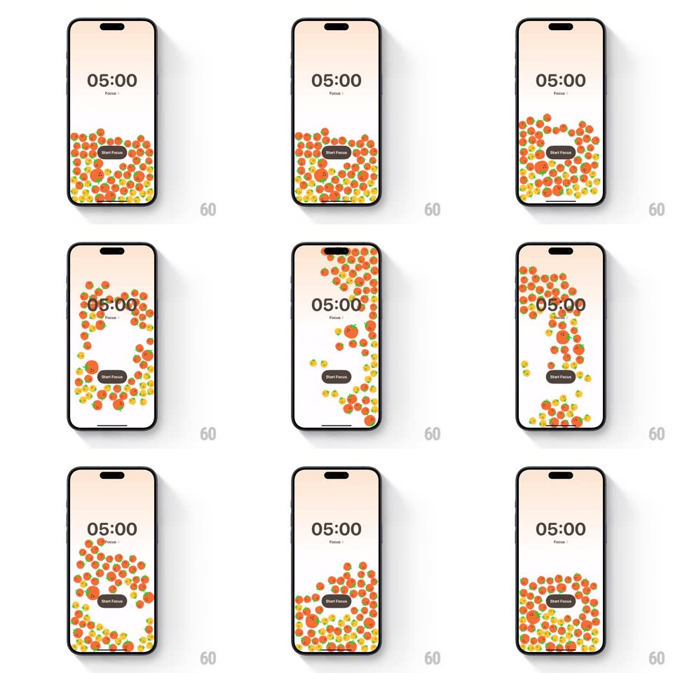

Media
Frame-by-frame

Rebuild this interaction 1:1: FocusPomo's gyroscope timer screen - dozens of tiny orange and yellow tomato mascots fill the lower half of the timer screen ("05:00 Focus", Start Focus button) and respond to device tilt with real physics: they roll, pile up, and bounce against the screen edges as the phone moves.

Rebuild this interaction 1:1: FocusPomo's gyroscope timer screen - dozens of tiny orange and yellow tomato mascots fill the lower half of the timer screen ("05:00 Focus", Start Focus button) and respond to device tilt with real physics: they roll, pile up, and bounce against the screen edges as the phone moves.
## Integration
Integration: stack-agnostic spec - springs given as stiffness/damping, timed motions as duration + curve; map every value to your framework and animation library of choice.
## Scene
Soft peach timer screen: big "05:00" with "Focus" label, a black "Start Focus" pill button, and a bed of small round tomato characters (orange and yellow, green stems, tiny faces) filling the bottom region like balls in a pit.
## Motion spec
Pattern: physics particle pit driven by the gyroscope.
- Every tomato is a physics body: gravity follows the device's tilt vector in real time, so tilting the phone pours the pile toward the low edge.
- Tomatoes collide with each other and the screen bounds (restitution ~0.4, a soft bounce; friction keeps piles stable); they tumble and roll over one another, stacking in mounds.
- A quick shake sends the whole pit bouncing; the pile re-settles within ~2s.
- The timer text and Start Focus button are not physics bodies - tomatoes bounce off the button's bounds as if it were solid.
- Each tomato's face rotates with its body as it rolls.
## Calibration
- The pile rests naturally at the bottom when the phone is level - no jitter at equilibrium (sleep threshold on the physics engine).
- Tomato count is high (~60+) - the charm is the crowd, not individual sprites.
## Reduced motion
Static pile at the bottom; no tilt response.
## Don't miss
- Gravity tracks the physical world, not the screen orientation - rotating the phone keeps the pile "down".
- Faces stay on the tomatoes as they roll - the sprites rotate with their bodies.